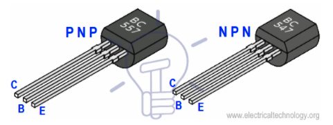
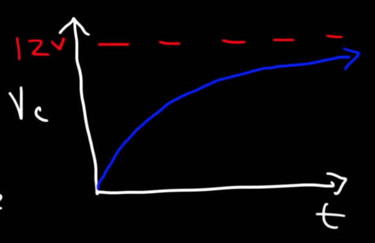
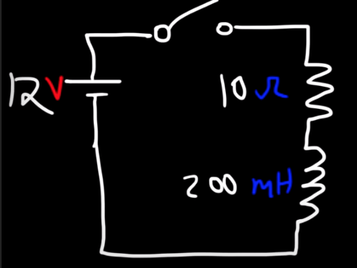
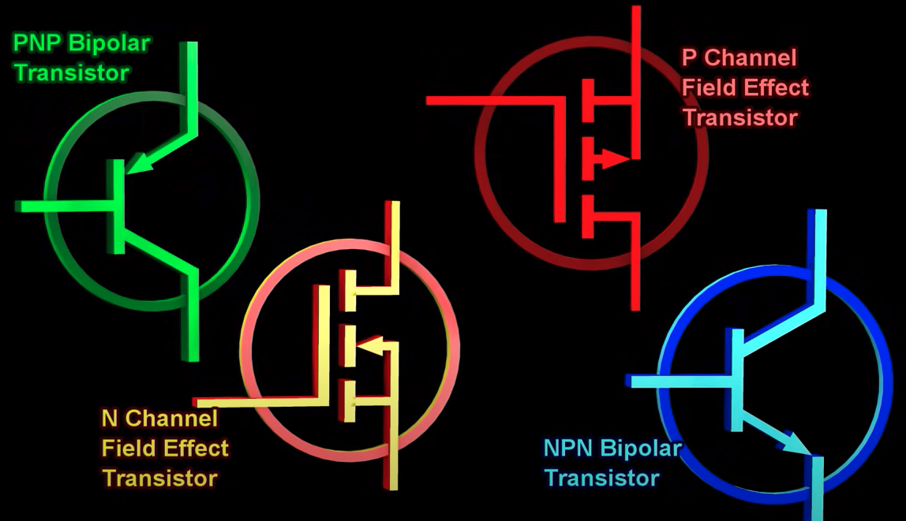
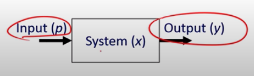
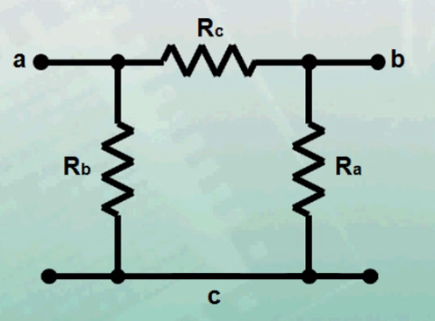

EE Fundamentals
Review of electrical engineering terms
Table of Contents
Circuits
Block diagram
Circuit diagram
Wiring diagram
IC layout
MOSFET
Integrated circuit
Interconnect
Breadboard
Printed circuit board (PCB)
Traces
Motherboard
Daughterboard
Surface mount devices (SMD)
System on a chip (SOC)
Soldering
Crimping
Vias
Dielectric constant
Radiation hardening
AWG
Switch
Relay
NC and NO
Poles
Double throw
Electromagnet
Solid state relays
Contactor
Contactor vs. Relay
Solenoid
Communications
UART
Differential signaling
RS-232
RS-485
Ethernet
USB
SpaceWire
Duplex communications
Simplex communication
RS-232 vs. RS-422 vs. RS-485 vs. Ethernet vs. USB
Communication protocol
ASCII Encoding
Shielded cable
Faraday cage
Bit
Bit rate
Baud rate
Line code
Motor Control
Pulse width modulation
Duty cycle
Stator
Armature
Commutation
Servo motors
Stepper motor
Core Principles
Conductor
Insulator
Semiconductor
Voltage
Current
Power
Apparent power
5 ideal basic circuit elements
Electrical source
Resistance
Ohm’s law
Loop
Kirchoff’s laws
Series vs. parallel circuits
Voltage divider circuit
Reference voltage
Delta and pi interconnections
Wye (star) and T interconnections
Wheatstone bridge
Node voltage method
Resistor
Capacitor
Electrolytic capacitor
Capacitance
Capacitors vs. Batteries use cases
Rectifier
Inductor
Inductance
Faraday’s law of induction
Lenz’s Law
Capacitors vs. Inductors
Impedance
Diode
LED
Forward bias
Reverse bias
Zener diode
Oscilloscopes
Oscilloscope
Oscilloscope axes
User interface
Under the hood
Probes
Probes on 10x
Setting up an oscilloscope
Using an oscilloscope
Attenuation
AC and DC coupling
Ground coupling
Probes to tune the compensation capacitor
If the waveform on the oscilloscope is jittering
Cursors
Single sweeps
Using multiple channels
To consider when buying an oscilloscope
Oscilloscope alternatives
How oscilloscopes sample signals
Types of waves
Grounding an oscilloscope
Active differential probe
Edge triggering
Slope triggering
Oscilloscope vs. Multimeter
Controls
PID
Set point
Process variable
Error
Non-integrating process
How a PID works
Derivative kick
PI vs. PID: Noise
Benefits of a filter with PID
How to tune a PID
Deadband
Hysteresis
Bode plot
Frequency response
High pass filter
Low pass filter
Band pass filter
Model predictive control (MPC)
MPC vs. PID
Robotics
Four axis robots
Five axis robots
Six axis robots
ROS
RF Engineering
RF
RF Engineer
Ether
Frequency
Wavelength
Power
Decibel
Bandwidth
Frequency blocks used by popular applications
ISM bands
802.11
Wifi
Embedded Systems
Embedded system
Actuator
Embedded subsystem
Standalone embedded system
Networked embedded system
Assembly language
Microcontroller
DSP
Closed loop control vs. open loop control
Pulse width modulation
Controller hardware
Controller software
FPGA
AND gate
OR gate
Truth table
Languages used for FPGA development
Firmware
C++
C++ overview
C++ basic workflow
Executable programs
Solution platform
Debug vs. release
Resources
Circuits
Block diagram
- Principal parts of system are represented by blocks connected by lines that show their relationships
- Typically used for higher level, less detail descriptions to clarify concepts
- Doesn’t worry as much about the implementation details
Circuit diagram
- Representation of an electrical circuit
- Shows actual electrical connections, unlike a block diagram
- Two major types
- Pictorial: uses images of components
- Schematic: shows components and interconnections using standard symbols
- Used for the design of circuits, layout of PCB’s, and maintenance of electrical equipment
- Also known as a wiring diagram, electrical diagram, or electronic schematic
Wiring diagram
- A drawing that shows the physical arrangement of wires and components of a circuit, and how they connect
IC layout
- Representing an integrated circuit in terms of geometric shapes in accordance to the metal, oxide, and semiconductor layers that make up its components
Two main types of transistors
- MOSFET and BJT
- They have different behaviors that can be better suited towards different applications
MOSFET
- Field effect transistor: a type of transistor that can change conductivity depending on the voltage applied to it. This allows it to amplify or switch electronic signals
- The most common semiconductor device in both digital and analog circuits
- The first compact transistor
- Metal–oxide–semiconductor field-effect transistors
- In controllers they’re often optimized for switching high loads
How MOSFETs work
- Has 3 terminals: gate, source, and drain
- The drain is controlled by a voltage to the gate terminal. This voltage controls how much current flows into the drain
- During steady state, the gate does not have any current flowing. Only a high or low voltage applied
- There can be 4 types of them: permutations of p and n channel, enhancement or depletion mode
Two types of MOSFETs
- Both source and drain are made of n-type semiconductors
- Decrease in voltage on the middle terminal causes a decrease in current
 [a]
[a]
- Both the source and drain are made of p-type semiconductors
- Increase in voltage on middle terminal causes a decrease in current, and vice versa
Two modes of MOSFETs
- When the gate terminal voltage is low, the channel between source and drain is most conductive
- When the gate terminal voltage is low, the device does not conduct. Voltage must be applied to the gate in order for conduction to occur
BJT
- Bipolar junction transistor: a type of transistor that is driven by changes of small current flowing through a base terminal that controls a much larger current through the transistor’s other two terminals[b]
- Typical uses: an amplifier, oscillator, or switch
- How it works:
- 3 pins: the base, the collector, and an emitter
- Two junctions: p-junction and n-junction
- Current at the base terminal dictates the output current: a small base current equals a small collector current, for example, for an NPN BJT. Output current is always equal to the input current * the gain - often 10-20x the base current

Two types of BJT
- Current flows in the emitter and out of the collector
- Arrow pointing out of the middle terminal (positive current flows in the direction of the arrow)
- To remember: not pointed in

- Current flows into the collector and out of the emitter
- Arrow pointing into the middle terminal (positive current flows in the direction of the arrow)
- To remember: pointed in permenantly

[c]
BJT vs. MOSFET
- High power applications - i.e. for power supplies
- Low current applications
- When the current draw is predictable, i.e. an LED
- MOSFET has a more complex structure than a BJT
- Drawings:

Integrated circuit
- A set of electronic circuits on a chip of semiconductor material (i.e. Silicon), allowing for circuits that are much faster and smaller than circuits made of discrete electronic components
- Large amounts of tiny MOSFETs are integrated onto a chip
- They can be mass produced reliably and are a backbone to the revolution in electronics and computing
- They are printed using photolithography instead of being constructed one transistor at a time
- There’s a high cost to design and manufacture them - requires high production volumes
- Is typically soldered on the PCB, PCB can also make electrical connections between integrated circuits
- Also known as an IC, microchip, or chip
Interconnect
- Structures that connect multiple circuit elements, i.e. transistors, together electrically
- Their design and layout on an IC is essential for proper performance
- They can be local or global
- Local: connects elements close together
- Global: can transmit over larger areas
Breadboard
- Used to prototype electronics
Printed circuit board (PCB)
- A laminated board that has insulating and conductive layers to function as the circuit(s)
- Entire layers are dedicated to power and ground (power planes and ground planes)
- Each layer is usually composed of copper, with insulating fiberglass/epoxy between them
- You’ll see applications with anywhere from 2 to 50+ layers, but 2 to 10 is typical
- Top layers: a solder mask which is colored (usually green) to provide electrical insulation
- On top of the solder mask: silk screen for markings/letters
- Also contains components like resistors and capacitors
- Two functions:
- Keep electrical components fixed (via soldering)
- Allow for reliable electrical connections between necessary terminals
- PCB refers to the flat board without anything on it
- X rays are common ways to analyze PCB’s
Traces
- The wires connecting different components on a PCB
- They’re electrical separate and can’t touch other traces
Motherboard
- PCB with all the components mounted to it
- It often contains mating connectors and cables, where components like a camera are mounted
Daughterboard
- In some applications (i.e. smartphones), you have multiple PCB’s based on their design. For instance, one PCB at the top and one PCB at the bottom
- In these applications, the smaller one is called the daughter board
Surface mount devices (SMD)
- Components (i.e. resistors, capacitors, MOSFETs) that mount directly on PCB’s instead of being soldered into holes
- Components soldered into holes are called through hole components
System on a chip (SOC)
- The main microchip found in electronic devices like smartphones
- It gets mounted onto a PCB on a grid of pads called a ball grid array
- Note that the SOC is just one microchip on a typical PCB. There are usually other pads on a PCB for chips like wireless and memory
- The PCB allows all of the other components (i.e. in a phone - cameras, charging port, switches, etc.) to communicate with the SOC via hundreds or thousands of “wires”
Soldering
- Joining two materials via a filler metal called solder
- The filler metal needs to have a lower melting point than the component metal
- It used to often be lead, but now there are lead-free filler metals
- Different from welding, where the workpiece is melted
- You often use flux to help prevent corrosion and removing oxidization, sealing out the air. Lets the solder adhere to a clean surface
- Usually uses rosin from pine trees
- Note: in brazing, the filler metal melts at a higher temperature than the component metal
Crimping
- A solderless electrical connection
- Crimps can be gas tight, preventing oxygen/moisture from reaching the metals and thus no corrosion
- Joint is stronger because no alloy is used
Vias
- Plated through holes in a PCT that allows layers of the PCB to be interconnected with necessary conductive layers
- The plating is usually copper
- Through hole: Through all layers
- Blind via: Connect top or bottom layer to a middle layer
- Buried via: Connects internal layers to each other
- Note that copper is removed from vias around layers that they don’t want to connect to:
Dielectric constant
- The electrical conductivity of a material
- It changes with the temperature of the material
Radiation hardening
- Making components resistant to being damaged/destroyed by radiation - i.e. for military, nuclear, or space applications
- Often done on chips by manufacturing the silicon on an insulator (SOI) or silicon on sapphire (SOS)
AWG
- Wire gauge - cable thickness
Switch
- A way to connect and disconnect two wires
- Has some limitations:
- Switch needs to be able to handle the full current needs of the system. As power goes up, wire size and switch size goes up
Relay
- Electromagnetic switches: A low powered circuit that powers a high powered circuit
- Anytime there’s a small circuit or a computer controlling a high powered electronic device, a relay is usually involved
- It’s made possible due to electromagnets. They have a coiled electromagnet inside. The lever gets actuated by the electromagnet
- Two positions:
- Normal - inactive. Relay is off
- Activated (when coil is turned on)
- They don’t draw much power and they’re very cheap
- Example: starting your vehicle by putting the key in the ignition. Powers a low voltage switch, which then controls a high powered circuit to start the engine
- Even for a high current system, you don’t usually need that much power to move the switch
NC and NO
- A way to define a relay. In an NC circuit, the door is normally closed and someone has to add power on it (open it) to make it normally open
- In an NO circuit, the circuit is open in its inactive state. If it’s acted upon, electricity can then flow
- Refers to the pins on a relay (or contactor)
Poles
- The number of movable strips that can switch contacts in a relay
- You often see two-pole relays and four-pole relays. The number of copper strops seen on it
Double throw
- When you have a pole that switches between contacts, completing the circuit at both positions of its actuator. Single throw just completes the circuit at one position
- So you might get double pole double throw relays or four pole double throw relays
Electromagnet
- Add electricity to a wire coiled up and it becomes a magnet
- If you take a wire and coil it up, it increases the magnitude of the electric field
- If you increase the current flowing through the wire, it increases the strength of the magnetic field
- Example: we use electromagnets to pick up cars in junkyards
Solid state relays
- A relay that has no moving parts, so has a longer lifetime using an electronic switching device. Uses transistors and thyristors
Contactor
- A high-current handling relay
- Inside a contactor box is a coiled electromagnet
Contactor vs. Relay
- Contactor is like the big brother of the relay - it’s much larger
- Much of their functionalities are the same. They operate on the same principle
- If you’re using something that uses a lot of power (5-10A and above), use a contactor
- If you want advanced functionality, i.e. a device with timers, usually use a relay
Solenoid
- Similar to relay but has a different function: its primary purpose is to push and pull things instead of moving contacts. As such, it pulls with more force
- When energized, the coils move an arm back and forth
- Note: you often use a relay with a solenoid
Sources
Communications
UART
- Universal asynchronous receiver-transmitter: used for asynchronous serial communication. Bits are sent one by one with start and stop bits
- It’s a piece of computer hardware
Differential signaling
- A way to transmit electrical information using two complementary signals: equal in magnitude but opposite in polarity
- The signals are referred to as “balanced”
- Contrasts with signaling where one end is a fixed voltage instead of complementary
- Receiving circuit responds to the difference in the signals
- Usually wires in a twisted pair or traces on a PCB
- Benefits:
- Electromagnetic field around the pair is zero, henced the balancing
- Noise correlated between the two levels gets cancelled out
- RS-422
- RS-485
- Ethernet over twisted pair
- PCI
- HDMI
- USB
RS-232
- A 12-volt UART standard
- Can do up to 200kbps
- It needs to use 12V because of it not having differential signaling, higher voltage allows for higher noise immunity
- Commonly used in computer ports and industrial communications
RS-485
- A 5-volt UART standard
- Uses differential (balanced) signaling over a twisted pair
- Can do up to 10Mbit/second
- Allows for longer cables up to 1200m (reduced bit rates with longer cables, however)
- Can be arranged in point to point nodes
- Used in a lot of industrial control and in modbus/profibus
Ethernet
- Wired computer networking technologies that uses switches and twisted pair cables, often to carry internet protocol over local area networks (LAN)
- It’s also a serial communication standard
- Much higher data rates than RS-485: 400Gbit/sec
- No built in way to control for packet collisions, making it less reliable in applications like robotics
USB
- Standard for connection, communication, and power supply between computers, peripherals, and other computers
- Lots of different plug types
- Speeds:
- USB 3: 5 Gbit/sec
- USB 4: 40 Gbit/sec
SpaceWire
- A spacecraft communication network that uses full duplex (FDX), point to point serial links with guaranteed delivery
- It’s very fault tolerant
- Usually uses 9 pins (d sub)
- Does not do audio or video
Duplex communications
- Point to point devices that can communicate with each other in both directions
- Two types:
- Full duplex (FDX): Allows simultaneous communications in both directions
- Half duplex (HDX): Allows both parties to communicate with each other but not simultaneously
Simplex communication
- One device transmits while the others can only listen, for example speakers, garage door openers, and TV
RS-232 vs. RS-422 vs. RS-485 vs. Ethernet vs. USB
- Lower transmission speed
- Shorter maximum cable length
- Larger voltage swing
- Originally made for connections with personal computers
- Descendant of RS-232; higher data rates
- Better noise immunity → longer cables
- Needs 2 pairs of twisted pairs. Can perform transmission and reception simultaneously. Has two transmissions (Y,Z) and two receptions (A,B)
- Goes at +/- 6 volts, which is better as the
- Only uses 1 pair of twisted pairs. Cannot perform transmission and reception simultaneously
- It’s optimal network topology is a daisy chain
- Unlike the RS interfaces, does not poll each slave so there can be packet collisions
- Communicates at higher bit rates, allowing for more noise disruption
- It’s optimal network topology is the star or extended star
 [d]
[d]
- Slower data transfer rates than Ethernet
- Cables are shorter in length - was originally designed for peripherals on the same table top
- Must be used in a tree network topology
- Uses master/slave connection; peripherals can’t connect to each other except through the host
Communication protocol
- A system of rules that defines syntax, semantics, communication synchronization, and error recovery
- Can be implemented by hardware, software, or both
- Two types
- Text-based (aka plain text): Represents content in human readable format like plain text, ASCII encoded
- Intended to be read by humans
- Examples: FTP, SMTP (for email)
- Binary: Represents values as bytes as opposed to ASCII encoded characters
- Intended to be read by a machine instead of people. They are faster
- Protocols are to communications what programming languages are to computations
ASCII Encoding
- A character encoding standard for representing text in computers, telecom equipment, and devices
- Values can then be standardized and represented in ASCII encoding by binary, hexadecimal, and decimal
- In addition to letters/characters, there are also special control codes
Shielded cable
- An electrical cable with at least one insulated conductors that’s then surrounded by a piece of conductive material
- Conductive material is often braided copper strands, aluminum foil, or copper tape. It’s then surrounded by an insulating jacket
- Shielding can act as screening or as the return path for the signal
- Acts as a Faraday cage for the wires to reduce electrical noise and reduce effects of electromagnetic radiation
Faraday cage
- Enclosure that blocks electromagnetic fields
- It works because electrical charges in the conducting material are so distributed that they cancel out charges to the interior
- Cannot block stable or slowly changing magnetic fields, i.e. compasses still work inside them.
- Can be a continuous covering of a conducting material or a mesh of conducting material
- Also known as a faraday shield
- Examples: why cell phones often don’t work in elevators, microwaves keeping radiation contained, and MRI machines circular to prevent outside noise
Bit
- Most basic unit of information in digital applications
- Stands for binary digit: it’s a 1 or 0. The logical state between two possible values
- Eight of them is one byte, and so on
Bit rate
- Sometimes denoted by the variable R, it’s the number of bits that can be processed per unit time
- Typically expressed in bits per second
- Examples:
- MP3: 320kbit/s (max), 32kbit/s (min - usually only good for speech)
- Video:
- 1Mbit/s (youtube 480p)
- 2.5Mbit/s (youtube 720p)
- 4.5Mbit/s (youtube 1080p)
- 9.8Mbit/s (DVD)
Baud rate
- A unit measurement of the modulation rate (symbol rate) - the number of signaling events per unit time - which helps describe the speed of communication
- In a line code, it’s the number of pulses per second
- Example: a baudrate of 9600 is 9660 symbols per second and the symbol duration time is 1/9600 seconds
Line code
- The pattern of voltage (typically), current, or photons used to represent the digital transmission of data
- There are a variety of line codes and they have advantages and disadvantages
- Examples:
Motor Control
Pulse width modulation
- A way to reduce average electrical power by chopping it up into discrete parts
- The power supply switches and chops up the electrical signal into discrete parts of a certain time interval
- Often used for running inertial loads like motors - their inertia causes them to react slowly to the switching
Duty cycle
- The proportion of “on” time during the interval
Stator
- Provides a fixed magnetic field within the outer housing
Armature
- The rotating component of a motor
Commutation
- The process of switching the field in the armature windings to allow for constant torque in one direction
- The commutator is connected to the armature to allow for this switching
- It makes sure the torque acting on the armature is always in the same direction
Servo motors
- A system of mechanical/electrical components that control types of motors - including AC, DC, brushed, and brushless
- They have a closed loop design that requires position feedback on the rotor to control speed/position
Stepper motor[e]
- Does not need position feedback for error correction
- They do not use brushes or mechanical commutators. Instead they’re a type of brushless DC motor. An electronic motor controller in them switches the current to each successive coil to lead the motor from pole to pole
- Not as sophisticated as servo motors as a result
- The rotor turns in a series of steps. Poles are energized in sequence to allow the motor to turn in these steps
- Stators have evenly spaced windings that act as magnetic poles
- Allows for precise stepwise rotational movements in accordance to the number of poles. For example, if there’s 60 poles in a stepper then you get 360/60 = 6 degrees of rotation per pole, which is quite precise. The position of the motor can always be known
- Torque: They can also provide holding torque
- Note: Less efficient than a DC motor
Core Principles
Conductor
- A material that has a lot of free electrons, which makes it easy to move free electrons through it
- Chemistry: A conductor has between 1 and 3 electrons in its valence shell. The conduction band (for electrons) and valence shell overlap so it’s easy for electrons to move
- I.e. copper
Insulator
- A material where the valence shell is packed so there’s little room for an electron to move in
- Therefore the nucleus has a tight grip on all the electrons
Semiconductor
- A material that acts as an insulator, but if electricity is applied some electrons get enough energy to make the jump from the valence into the conductive band and thus can jump free
- At the atomic level, its conduction band is pretty close to the valence shell (but not as close as for a conductor)
- Example = silicon. On its own is an insulator, but engineers dope the silicon with another material to change these properties
- n-type (negatively charged, hence the n): phosphorus. It takes the position of some of the silicon atoms (in pure silicon) so there’s now extra electrons in the material which an move around. So this has too many electrons
- This means its negatively doped
- p-type (positive, hence the p): Add in a material like aluminum, with only 3 electrons in its valence shell. Not enough electrons. So this has not enough electrons (holes for electrons)
- This means its positively doped
[f]
Insulators Conductors Semiconductors
Voltage
- Energy per unit charge:

- Denoted by

- Units: J/C → V
Current
- Charge per unit time:

- Denoted by
- Units: C/s → A
Power
- Energy per unit time:

- Units: J/s → W
- Positive power means circuit element is using power. Negative power means element is generating power
- If current is flowing from positive terminal to negative terminal, . If following from negative terminal to positive terminal,

Apparent power
- The product of the root mean square values of voltage and current
- Measured in volt-amps (VA), whereas regular power (in W) is power that does the useful work.
- It’s important because circuit elements (transformers, resistors, fuses, etc.) must be sized to carry the total current, not just the current that does useful work
- Note: adding apparent power for two loads does not accurately give total power unless there is the same phase difference between current and voltage (same phase difference)
- Note: there are a variety of ways engineers describe power in a circuit and each way gets a different unit to differentiate between them (i.e. S → VA vs. P → W):
[g]
5 ideal basic circuit elements
- Voltage source - an electrical source
- Current source - an electrical source
- Resistor
- Capacitor
- Inductor
Electrical source
- A device capable of converting non-electrical energy (i.e. chemical or mechanical energy) to electrical energy, and vice versa
Resistance
- The opposition to the passage of electric current through the element
- When there’s resistance, power is absorbed
- P =

- P =

- Represented in Ohms
- The opposite of resistance is conductance,

Ohm’s law
- Note: this is for when current is flowing from the + to - terminals
- if current is flowing from - to + terminals
Loop
- Closed path starting and returning to a node without passing through any other nodes twice
- Example: 3 loops here
Kirchoff’s laws
- What goes in must come out
- The algebraic sum of all the currents at any node in a circuit equals zero
- Analogy: the water flowing into a cross section on a pipe equals water flowing out of that cross section

- The algebraic sum of all voltages in a closed circuit (a loop) is 0
- What goes up must come down
- Analogy: hiking a mountain, you go up route A and down route B back to your car. The mathematical sum of the altitude we hiked is 0 feet.
Series vs. parallel circuits
- Same in series
- In parallel, sum of currents through each path is total current
- Parallel circuits experience the same voltage drops across their terminals
- Total drop in a series circuit is the sum of them
- In parallel, combine
- Derivation: , since voltage is constant across both parallel paths
Voltage divider circuit
- When you’re measuring the voltage across element(s) within a circuit
- It produces an output voltage that’s a fraction of the input voltage by distributing the input voltage among the components of the divider (i.e. resistors)
- This creates a reference voltage
Reference voltage
- Reduce the magnitude of a voltage so that it can be measured
Delta and pi interconnections
- Triangle-shaped circuit connection that is electrically equivalent to a pi-shaped interconnection
- Typically used for shorter distances
- Typically used when starting current is higher
- It’s a way to distribute power (grid)
Wye (star) and T interconnections
- Circuit that’s shaped like a Y. It’s electrically equivalent to a T
- Typically used for longer distances since less insulation is required
- Typically used when starting current is less
- Can be transformed to a delta circuit, and vice versa, to simplify circuit analysis
- Used to distribute power (grid)
Wheatstone bridge
- Electrical circuit that can be used to measure an unknown resistance, allowing for super accurate measurements - much higher than with a voltage divider
Node voltage method
- A way to quickly solve circuits using Kirchoff’s laws
Resistor
- Restricts current, i.e. so your LED doesn’t get burned out by connecting it directly to the battery
- Water analogy: pressure of the water = the voltage, flow = the current. So its like adding a restriction to your pipe
- Physical resistors are usually ceramic, with a carbon coating and a spiral of carbon to fine tune its conductivity
- Has colored bands to say how much resistance
- They also make variable resistors, where you can tune it manually
- Water analogy: a constriction in the pipe or a sand filter. Note they both do the same thing: reduce the cross section area of the pipe
Capacitor
- A passive element that stores electrical energy in a field
- Ideal capacitors don’t dissipate energy (although in real life they do a little bit)
- A capacitor’s capacitance is only a function of the design geometry (area of the plates and distance between them) - it’s directly proportional
- Very common in circuits and lots of different types/uses for them
- Has electrodes on both sides
- Does not conduct when it’s charged. It does conduct after it’s fully charged
- Water analogy: A membrane that stretches until it pushes back on the water with equal force as from the pump - then it’s charged. If you then turn off the pump, the water gets pushed by the membrane as it stretches back. Note this isn’t the best analogy
- On a schematic, looks like:

- Use cases: smooth ripples in voltage
Electrolytic capacitor
- A type of capacitor that achieves a really high capacitance in a small area using a liquid electrolyte
- You have to be careful with them - they can explode
- Note: these can explode if they get too much
Capacitance
- The ratio of charge stored on a conductor to the difference in electrical potential
- Units: Farad
- A 1 Farad capacitor, with 1 C of electric charge, has a potential difference of 1V between plates
- Self capacitance: Electric potential difference between the object and ground - when the conductor is isolated
- Mutual capacitance: Electrical potential difference between two charged conductors, i.e. for a parallel plate capacitor
Capacitors vs. Batteries use cases
- Can charge and discharge much quicker
- If connected in parallel to a resistor (i.e. a light), you get a nice slow fade
- A practical use case is in a rectifier during the pauses of the alternating current - smoothing. If you didn’t have the capacitors, lights connected on the DC circuit would flash
- They can also be used for suppression, boosting, and other circuit functions
- Note: bigger capacitors are often multilayer
- Much more energy density (much more energy in the same space than a capacitor)
Rectifier
- A circuit that converts alternating current to direct current
Inductor
- A passive two-terminal component that stores energy in a magnetic field when current flows through it
- It starts off resisting current flowing through it and produces a back emf. However some current does flow through, and as more does the back emf reduces up until the inductor begins to function like a normal wire
- When the power supply is cut, the inductor converts its stored magnetic field energy back into electrical energy
- The energy can be released almost instantly
- When an inductor is connected in parallel with a resistive load, it will cause the load (i.e. light) to turn back on once the power supply is disconnected
- Is typically a wire wound into a coil
- Note: motors, transformers, and relays act as inductors because they all have coiled wire
- Water analogy: a high inertia water wheel in a pipe system
Inductance
 . Magnetic flux of the current / current
. Magnetic flux of the current / current - Measured in Henry’s (H)
- Usually calculated from Maxwell’s equations
- Higher inductance means more energy that can be stored, and large the back emf
- You need an RLC meter to measure inductance. Can’t use a standard multimeter
Faraday’s law of induction
- An EMF is generated when charge goes around in a loop is changing
- Note that no EMF is induced when the current is steady
- The faster the magnetic flux changes, the greater the induced EMF
- 3 ways to change magnetic flux (and thus induce a current in the coil):
- Change the magnetic field (move magnet in and out, for example)
- Change the area of the coil:
- Area up, magnetic flux increases → induces EMF
- Change the angle with respect to the magnetic field (rotate the coil, for example)
- Fundamental operating principle of motors, generators, solenoids, and inductors
Lenz’s Law
- The direction of electric current induced in a conductor by a changing magnetic field opposes the initial magnetic field
- It only refers to the direction of current, not its magnitude
Capacitors vs. Inductors
- When a capacitor is connected to a voltage source, its voltage gradually increases and its current gradually decreases; when an inductor is connected to a voltage source, its current gradually increases and its voltage gradually decreases
- If a capacitive circuit is disconnected from a power supply, the capacitor will temporarily maintain voltage. If an inductive circuit is disconnected from a power supply, the inductor will temporarily maintain current
- Capacitor stores energy in an electric field, inductor stores energy in a magnetic field
Impedance
- Combination of resistance, capacitance, and inductance
Diode
- A two terminal component that conducts current in one direction. Asymmetric conductance
- Forward bias: when it acts as a conductor
- Reverse bias: when it acts as an insulator
- Typically has a black cylindrical body with a stripe on one size
- Has an anode and a cathode
- Purposes:
- Connect circuit if power supply is connected back to front
- Rectifiers to convert AC to DC (i.e. full bridge rectifier with capacitors - looks like a diamond and smooths out the current)
- Analogy: A check valve on a water pipe
LED
- Because they’re optimized for emitting light, you don’t have a very high blocking voltage so it’s easy to destroy them.
Forward bias
- In a diode, p-type and n-type (doped) silicon are put next to each other
- Forms a PN junction. Electrons from n-type move over to the p-type
- Diodes have max current/voltage limits in the forward direction as well
- Note that there typically is a small voltage drop (i.e. 0.7V - that’s the standard silicon junction voltage) across the diode
- When current is added, it creates forward bias to allow current to flow (from - to + in this picture)
Reverse bias
- If current flows from the anode to cathode, the PN barrier expands and the diode acts as an insulator
- Note that a diode can only act as an insulator up to a certain negative voltage. See the IV diagram below
- Going over will destroy the diode and possibly your circuit


Zener diode
- They have a specified reverse breakdown voltage up to a point called the Zener voltage
- Uses:
- Create voltage regulators (use a resistor and ground to keep voltage low, even if the input is too high)
- Simple power supplies (i.e. always keep the voltage at 12V)
- Shunt voltage regulators
- Voltage overprotection

Oscilloscopes
Oscilloscope
- Tool for analyzing and debugging electrical circuits
- Lets you see electrical signals - test and display voltage signals as waves to show the variation of voltage over time
- It joins up a bunch of discrete voltmeter readings. It’s a time machine
- How they work:
- Uses an analog to digital converter to sample the signal and then draw the wave on a screen
Oscilloscope axes
- X axis - Time. You can dictate how many time samples you see in the screen using time division
- Horizontal position
- Time base: seconds per division. Zoom X in and out, in addition to the speed of the signal being drawn on the dispay
- Vertical position knob
- Voltage scale knob: adjust volts per division. Zoom Y in and out
- Note: there’s usually an auto button to put your signal into view
[i]
User interface
- Display: where waveform and any information is drawn
- Channels: You usually see oscilloscopes with 1, 2, or 4 channels. 2 channels in this one:
- Knobs above channels: control the voltage scale on the display for each channel independently
- Horizontal scale: controls the time scale on the screen
- Can tell the scope to start measuring when it sees a certain part of a signal
- Menu section: settings like saving an image
- Single, Run, and Stop: Start and stop measuring
 [j]
[j]
Under the hood
- Each input port has a resistor and capacitor connected in parallel and connected to ground
- A coaxial cable (has an inner conductor with a shield surrounding it, all inside a protective outer jacket) is used to provide extra shielding
Probes
- Usually they’re passive voltage probes: measure between ground clip and the tip of the probe
- No active electronics in the probe - just wires, resistors, and capacitors
- Usually has a little switch labeled 1x on one side and 10x on the other:
- The amount the probe attenuates the signal
- If 1X, the tip is connected to the inner wiring of the coaxial cable and the ground is connected to the shielding of the cable. This works well for signals with frequencies less than a few MHz. However for higher frequencies the coaxial cable can act like a capacitor. The 10x option helps resolve this
- Note: if you don’t have something to hook to, you can usually remove the hook tip to get a nice fine tip to manually press to a circuit element
Probes on 10x
- For 10x attenuation, you enable a resistor to isolate your circuit from the cable
- Takes advantage of a resistor in the probe that’s 10x the resistor in the scope. This acts as a 10:1 voltage divider, attenuating the signal by a factor of 10
- However this creates a low pass filter, making high frequency signals appear smaller than actual. As such, an adjustable capacitor is included in parallel so that the signal attenuation is the same regardless of the frequency
- Leaving the probe on 10x is usually best - it’s the best compromise between attenuating the signal and the probe affecting your circuit
- You then need to tune the probe - tell the oscilloscope you are using 10x
- Select 10x on your probe and plug it into the oscilloscope
- Hit probe button → knob to turn it to 10x → press knob to select it
Setting up an oscilloscope
- Make sure only the channels you are using are on
- Tune the probe accordingly
- Trigger menu button → Type edge
- Source → Channel 1 (or whatever channel you are using)
- Slope → up edge
Using an oscilloscope
- On your channel probe, connect ground clip to negative post and probe tip to positive post
- Adjust horizontal scale (zoom in or out) as necessary
- Adjust trigger level to stabilize the wave and eliminate jitter
- Press measure button: gives you automatic measuring like peak to peak voltage and wave frequency
- If the auto measuring doesn’t cut it, use cursors if needed to manually measure waveforms
- If you are trying to measure something that isn’t periodic and only shows up sporadically (i.e. a message or noise), tell the scope to perform a single sweep
- Save images to your computer:
- Plug in a USB drive
- Press the save “recall button” and press save. It’ll be saved in the root directory
Attenuation
- Weaken - i.e. weaken a signal. 10x attenuation means reducing the signal by a factor of 10
AC and DC coupling
- Pick the portion of the signal you want to observe
- AC coupling:
- Blocks any steady voltage. This allows the display to be amplified so you can see any variations.
- Otherwise, if the steady voltage is at 100V and there is a 3V change, you wont notice it if its not AC coupled. AC coupling blocks the 100V out
- Gives you the full picture of the voltage - seeing if it remains low or high
Ground coupling
- A way to set the scope’s display to zero volts before taking any measurements
Probes to tune the compensation capacitor
- Note: you shouldn’t have to do this too much
- Attach ground clip to ground tag, put probe on signal tab (bottom right of picture)
- This makes a nice square wave on your scope. You connect the channel to the ground and signal tabs on the scope
(1)
- Adjust the horizontal and vertical scale knobs to adjust the time, effectively zooming in on the waveform (turn knobs clockwise)
- Can make it look like this:
- Fix any jitter
- If the tops and bottoms of the wave aren’t perfectly flat, it’s because the compensation capacitor in the prob hasn’t been tuned
- To tune it, adjust the screw head in the compensation capacitor probe until the square wave is flat
- Note: Sometimes the adjustment screw is right near the plug
If the waveform on the oscilloscope is jittering
- This is because the scope does not know when on the waveform to start measuring
- Solution: adjust the trigger level
- Use the trigger knob to raise the T line somewhere between the minimum and maximum of the waveform
- This will tell the scope to start measuring as soon as it sees the waveform do one sweep

Cursors
- A way to manually measure waveforms
- To use:
- Press the cursors button and follow prompts to turn them on
- Measure vertically (voltage) or horizontally (time)
- Manually move the cursors to where you want them
- You can get some nice characteristics including time and frequency
Single sweeps
- Used to detect sporadic signals
- To set up:
- Set trigger to falling edge (i.e. for noise that goes to lower voltage - i.e. the signal is normally high but when noise comes in it goes low)
- Set trigger level to something below the default high voltage
- Press single button: tells the scope to start measuring when it sees the condition and stop measuring once the condition makes a sweep across the display
- You can then zoom in and measure the bits to make sure the message looks right
Using multiple channels
- You’ll get multiple readouts on the display
- Example: see how the clock signal lines up with the data bits
To consider when buying an oscilloscope
- Bandwidth: max frequency range the scope can measure
- You should use a scope with a rated bandwidth at least 5x the frequency you intend to measure (for a sine wave)
- This is because as you go up in frequency, amplitude gets attenuated up to about 30%
- Most entry level scopes have a bandwidth of around 100 MHz. This means you should only use them for signals of up to 20 MHz - about 2% attenuation
- Granularity of details in fast transitions
- It’s related to bandwidth - expected rise time should be 5x that of the scope’s listed rise time
- Number of times per second a signal is read
- Entry level scopes are usually around 1-2 gigasamples/sec. To get a good reading, get a scope with a sample rate of at least 5x your highest frequency
- Number of bits used to measure each sample
- More bits = more precise measurement
Oscilloscope alternatives
- USB scopes - they’re portable and sometimes accurate enough
How oscilloscopes sample signals
- They measure voltage waves
Types of waves
- Note: these are not mutually exclusive
- Straight line
- Stays the same. This is something you can see on the multimeter
- I.e. hooking the scope up to a 9V battery
- Basic wave shape
- Example: AC power
- Voltage that goes high and low at regular intervals
- Uses:
- Digital outputs
- Computer clock
- Motor pulses (PWM)
- Step/pulse
- Sawtooth/Triangle
- Changes in voltage occur at a constant rate - hence the ramp of a triangle
- Timing relationship between two signals - i.e. a computer clock and corresponding data
- Two or more signals with no timing relationship
- Signals that constantly change
- Combination of sine, steps, squares, and pulse
Grounding an oscilloscope
- It protects you from shock and protects your circuits from damage
- Plugging its three-pronged power cord into an outlet grounded to earth ground grounds it
- Some oscilloscope do not require a separate earth ground because they have insulated cases and controls
- How to blow up an oscilloscope
- Note: the metal shell on oscilloscope connectors is grounded to earth because the scope is plugged into the wall with a third prong. So it’s a dead short through to main earth (no resistance or impedence in the circuit)
- This also means the metal connectors on different channel outputs are also shorted together
- So if you put your probe’s ground leads to differing voltage levels, you’ll short the output because they’re both on the same circuit
- This can blow up your probes
- If widget is isolated (i.e. has a battery) and is floating and you connect one probe to it, it won’t blow up
- Widget is an isolated mains supply instead of a battery. It’s getting power through a transformer that’s not connected to ground. Then it won’t blow up either because the power supply is still isolated
- Isolated mains supplies have no third earth pin, just the two prongs
- Another isolated type is switching plug packs found on computer chargers - only has 2 prongs as well
- Or if your GND and - on the power supply are NOT strapped together. In this image, they are strapped together:
- Sometimes you get a third prong just for mounting

- Mains earth reference on your widget
- You need to be very careful where you put your alligator ground clip in this scenario
- You lose the isolation and its no longer floating. Now you’ll short it via a very low impedance connection as shown by the red line below:
4. USB connectors: same as scenario 3. Usually USBs are grounded with a main earth ground in your computer, so this would short it too.
Active differential probe
- A high voltage differential probe that converts the mains earth from the probe connection to be floating
- Now you don’t have to worry about mains earth ground in your widget
- They can be isolated to hundreds of volts

Edge triggering
- You set a voltage threshold and specific slope incline to start measuring
Slope triggering
- If the voltage changes by a certain delta V amount, the scope will start measuring at that point
- This is commonly used for measuring triangle/sawtooth waves
Oscilloscope vs. Multimeter
- Pictures vs. numbers
- Multimeter:
- Precise measurements of discrete signals
- Portable and lightweight
- Good for front line testing
- Has some logging and other advanced functions (min/max, conductance, pulse width)
- Helpful for visually seeing amplitude, frequency, and transient signals not caught by a multimeter - more complex signals
- Faster measurement
Controls
PID
- Proportional integral control - its a control loop that calculates an error value as the difference between a set point and a process variable
- Breakdown:
- Proportional term: rapid response to controller error
- Integral term: eliminates offset but increases oscillations
- Derivative term: decreases the oscillations in the process variable
- It’s best for non-integrating processes. Use a P-only controller for integrating processes
- Example: cruise control
Set point
- The targeted value you want to hit (i.e. the desired speed in cruise control. In the AGV application, we wanted it to be the x distance being 0).
Process variable
- The measured value (i.e. the actual speed in cruise control. In the AGV application, this is the actual x value)
Error
- Difference between the set point and the process variable.

Non-integrating process
- A process that should eventually return to the same output given the same set of inputs and disturbances
- Both cruise control and the AGV straight line motion are examples of this
- The integral action in a PID is what helps remove offset
- If it’s an integrating process, use a P-only controller. There aren’t many cases of PD controllers - usually just P, PI, or PID (for controlling oscillatory behavior)
How a PID works
initial value proportional integral derivative
- CO = controller output signal
- CObias = any initial controller bias. The nominal value of where you turn on the controller. Can also be a null value
- e(t) = controller error = SP - PV. Note the PV is what’s currently being measured
- Tuning parameters:
- kc = controller gain. Can be - or +
- 𝝉i = controller reset time. Note: has units of time. Always +
- 𝝉0 = controller derivative time. Note: has units of time. Always +
- Proportional term: A tuning constant that’s proportional to the error
- Considers how far from the PV you are
- Integral term: As you decrease 𝝉i the integral term becomes larger
- Concerns both how long and how far you are away
- Derivative term: you multiply the kc value by the derivative
- It’s the slope of the PV curve
- Concerns how fast you’re changing at any time
- Without the derivative term, you might have some oscillations. So it helps limit the overshoot that you’d otherwise experience
Derivative kick
- If a set point (SP) changes really quick, you’ll all of a sudden have a massive error
- As such sometimes we want to take the derivative on the measurement instead of the error
- To compensate for this, set . Now you won’t get a kick
- Math and diagram:
[k]
- Example with and without kick (left vs. right side)
- Note: sometimes the kick doesn’t affect operations all that much and you only really get one cycle where the error is large. Depends on application, but it’s good to get rid of this kick. For example you don’t want a valve opening and shutting really quickly if it’s possible to avoid it
PI vs. PID: Noise
- Disadvantage of derivative: measurement noise can be a problem, and derivative action loses benefits when there’s random error (i.e. noise) in the measured PV. This happens a lot in real life
- This is because the derivative then causes PV measurement noise to be amplified and shown in the CO signal
- Solution: put a filter on the error measurement. Or approximating the noise to a line
- For example: the response is much smoother in a PI vs. a PID controller (see bottom graph in below image). This is because there’s a lot of measurement noise
- As such, this can have the effect of wearing out your equipment faster if using a PID (i.e. wearing out your valve)
Benefits of a filter with PID
- Doing so can help not wear out your actuator
How to tune a PID
- Set all gains to 0
- Increase the P gain until response to disturbance is a steady oscillation
- Increase the D gain until oscillations go away. Critically damped
- Repeat b and c as much as you can (until increasing D now does not stop oscillations). Set P and D to those values
- Increase the I until oscillations stop
Deadband
- A period of a control system where there is no output
- Example: backlash in gear teeth. This must then be taken into account when designing control systems
Hysteresis
- Different than deadband - there is always output. The system just had memory so the value in the previous state dictates the future
Bode plot
- A graph of the frequency response of a system: frequency vs. decibels and frequency vs. degrees
- It usually shows both a frequency response and a phase plot
Frequency response
- The quantitative measure of a system in response to a stimulus that characterizes the dynamics of the system
High pass filter
- Only allows signals with a frequency higher than a certain limit. Attenuates other signals
- For example, a male speaking voice is usually always about 80hz, so you can add in a high pass filter to only allow these frequencies
- The audio will just be cleaned up a bit by having one. Get rid of traffic, A/C, wind, P-pops on the mic, etc.
Low pass filter
- Only allows signals with a frequency lower than a certain limit
Band pass filter
- Only allows signals with a frequency with in a certain range
Model predictive control (MPC)
- Dynamic control and optimization: a control method to minimize the deviation between a system’s actual trajectory and the model predictions
- You want to drive the predicted output to match the actual trajectory using predicted control inputs and past control inputs

- The system, with states as X:

- Minimize an objective function subject to constraining equations
- Note: there are different approaches to minimizing deviation corresponding to the above equations on the right, including
- Minimize absolute value difference
- Minimize square root of the squared difference
- Minimize max deviation from trajectory: limit as it goes to infinity (infinity norm)
- Real life example: a chemical process in an oil refinery, current plant measurements are used to calculate future changes
MPC vs. PID
- Use MPC for more complicated systems that are changing dynamically. PID will do for simpler systems
Robotics
Four axis robots
- Usually in palletizing - can pick up single cases
- J1 at bottom: rotation
- J2 and J3: reach out in space to grab
- J4 to rotate along the ground plane for placement
Five axis robots
- Like a four axis robot, but the faceplate can be rotated to enforce level orientation with the floor

Six axis robots
- Most common robots for industrial purposes
- Can place an object/tool in any location in space and in any orientation (pitch/roll/yaw)
ROS
- Open source framework that allows for code reuse between robotics applications
- It’s not actually an operating system but a collection of frameworks
- It’s geared towards a unix-like operating system
- Some features:
- Hardware abstraction
- Low level device control (hardware drivers)
- Messages between processes
- Package management
- Robotics algorithms including planning, perception, SLAM, simulation tools
- Uses a graph architecture with processing done in different nodes
- Has low latency but it’s not a real-time operating system (RTOS). It’s possible to integrate ROS with RTOS code, however. This is being addressed in ROS 2
- Main languages: C++, Python, Lisp
RF Engineering
RF
- An electromagnetic wave that propagates in a vacuum or in media (i.e. conductors)
- On a deeper level: A form of energy in the modification of time dependent electronic and magnetic fields
- Only wave frequencies between 1 MHz and 3 GHz are RF. 3-30 GHz are microwaves. 30-300 GHz are millimeter waves. Higher frequencies are visible light, x rays, etc.
RF Engineer
- Work with gadgets that send or receive radio waves
- Includes commercial radio, tv, LTE/5G, wifi, and satellite communications
Ether
- Medium that carries electromagnetic waves
- An older term that’s sort of wrong - back from the Einstein days. Waves propagate in anything
Frequency
- The number of electromagnetic wave cycles passing through a point per unit time
- Often measured in Hz: waves/second. 1 Hz = 1 wave passing each second, 1 GHz = 1 billion waves per second
- Note that the speed of a wave in vacuum is always the same, regardless of frequency. The speed of light.
- Therefore, higher frequency waves must have smaller wavelengths
- As such, higher frequency engineers tend to use smaller components. Lower frequency engineers design with components that tend to be bigger
Wavelength
- Distance between wave crests
- Relationship between frequency and wavelength:
 [l]
[l]
Power
- Energy per unit of time that the electromagnetic wave can deliver
- A wave that’s more powerful can transmit further (i.e. radio) and penetrate deeper (i.e. medical applications)
- If a system has more power, it needs more care
Decibel
- A way to convert numbers into something that’s easy to handle
- The premise is multiplying them in the log domain. It’s useful when numbers become super large or super small
- I.e. multiplying a number by 103 - or 1,000, is 30 dB
- Every doubling in the linear domain adds 3 dB in the dB domain
Bandwidth
- The width of the wave spectrum that’s being covered by the application
- Example: FM radio has a bandwidth of 88 and 108 MHz - so the receiver has a 20 MHz bandwidth
- And the FM radio station gets a wave about 200 KHz, and the music only covers a chunk about 20 KHz wide. This is the bandwidth, and it’s directly proportional to how much data can be transmitted
- Note: cellular bands are bigger than radio bands, because we need more information
- The principle applies to all RF applications
Frequency blocks used by popular applications
- Note: systems that need greater transmission distances typically get lower frequency allocations, due to the physical advantage of less degredation from obstacles

Ku vs. Ka bands
- Ku is 12-18 GHz, Ka is 26.5-40 GHz. More frequency = more bandwidth
- Ku is more expensive per megabit than Ka
- Antenna size: Ku is smaller
- Interference: Lower frequency bands like Ku are better
- Ku covers more area per beam. So with Ka you can, say, only cover a country while Ku can cover a continent
ISM bands
- Industrial, scientific, and medical bands: Frequency bands that are free to use under certain maximum power limitations
- Historically, they were granted for purposes outside of communications
- Communications equipment must be built to handle any interference that comes from ISM equipment
802.11
- Technical term that describes a standard
- The wireless protocol that’s similar to the wired protocol used by today’s internet infrastructure, so we can combine wired and wireless elements in the same network
- 802 standards are maintained by IEEE
Wifi
- Proprietary term that certifies compatibility
- Similar to 802.11, it's a branded name owned by the wifi consortium which certifies that devices manufactured to the 802.11 standard are compatible with each other and can be used together in the same network
Embedded Systems
Embedded system
- The integration of sensors, actuators, and intelligence with a system to produce more versatile robust performance
- A special purpose computer custom built for a specific purpose
- Example: a calculator, a DSLR camera
- Note: general purpose computers are those that we use everyday and have more than one specific purpose. In addition to communication, smartphones allow for music, gaming, pictures, internet browsing, etc.
- Embedded subsystems
- Standalone systems
- Networked systems
 [m]
[m]
Actuator
- Power conversion device: converts electrical power to the kind needed by the controlled device (i.e. motor, pump, solenoid, etc.)
Embedded subsystem
- Usually part of a larger system. Independently they’re useless but they aid a larger system
- Example: a digital dashboard display in your car, which is part of the larger system of the car
- Example: the timer and buttons on a washing machine, part of the larger washer subsystem
Standalone embedded system
- Can perform its functions independently, i.e. digital watches, digital cameras, usb sticks, and MP3 players
Networked embedded system
- Group of physically separate electronic devices that do a collective function
- Includes the IOT
Assembly language
- Low level programming language that corresponds to the system architecture’s machine code
Microcontroller
- When intelligence is required but the complexity of the system is lower than if using a bunch of relays and timers
- It’s also helpful for integrating with a variety of sensors and actuators in addition to communicating with other devices
- When the system doesn’t require intelligence, i.e. a switch will do instead
- The system can be easier or cheaper if using individual components
- If the microcontroller is too small or there is too much going on - a computer might be a better fit instead
DSP
- Digital signal processing: take in real world signals (i.e. voice, audio, video, temperature, pressure) that are already digitized and then manipulates them so that the information can be properly used
- Example: ADC and DAC for sound input (mic) and output (speakers)
Closed loop control vs. open loop control
- Open loop control uses no sensor; closed loop does
Pulse width modulation
- Simulate an analog signal using a digital signal
- Example: analog signal and a pulse width modulated version of that signal

Controller hardware
- Can be any or multiple of the following:
- Computer
- Microcontroller
- Communication circuit
- Interface circuitry:
- Pullup/pulldown resistors / dip switches
- Analog processing
Controller software
- C/C++
- Assembly language (higher speed)
- FPGA (highest speeds)
FPGA
- Field programmable gate arrays - semiconductors that are a matrix of logic blocks (gates) connected via programmable interconnects
- They’re powerful for things that need to be done very quickly. They’re fast
- Why? Because they can do a lot in parallel because all the gates can work in parallel, whereas processors have to do things sequentially
- Therefore, you can send a ton of data through FPGA’s
- I.e. HDMI interfaces are processed by FPGA’s because you can dump in a ton of data super quickly
- Been around since the mid 80’s
- They are IC’s - a set of circuits on a chip
- Note: most are field programmable, so in the field you can actually reprogram them (i.e. switch an OR gate to an AND gate)
- Modern day FPGA’s: 10’s and 100’s of thousands of gates inside one device
- It’s like building circuits with LEGO’s - you start small and build up with them
- They can also have a ton of pins - therefore a lot of connections to the outside world. Some boards have hundreds or even thousands
- Super simple FPGA:
[n]
- The FPGA is the square box in the middle of this development board. Pins are on the left and right connector spaces
AND gate
- When both of your inputs are high, the output is a 1
OR gate
- If either of your inputs are high, the output is 1
Truth table
- Shows all the possible input/output combinations
Languages used for FPGA development
- VHDL
- Verilog
- They’re different than languages like C or Java because they are geared toward parallel processes
Firmware
- A specific kind of software that sits in between the hardware and the software
- It does not sit on a hard drive or SSD - rather on a dedicated memory chip
- Firmware code communicates very directly with hardware, bypassing any operating, drivers, or api’s
- Sometimes, it needs to be updated to change functionality or fix bugs
- However it’s often recommended to leave it alone unless its needed as this can permanently brick a product - for example this is because the system might not be able to understand that it needs to be updated (unlike for a computer)
- Note: firmware often has no encryption, so it’s often a target for hackers and spying
- Example: on screen prompts on your monitor to change settings. The firmware is acting as the monitor’s operating system
C++
C++ overview
- It’s object oriented, has functional features, and allows for low level memory allocation
- It’s almost always implemented as a compiled language
- Was designed for system programming and embedded software
- Note: file names can be .h or .cpp
C++ basic workflow
- Text source files → compiler → executable binary
- Header files do not get compiled, only .cpp files
Executable programs
- Program starts executing code that begins in the main function
- Code gets executed line by line
- Also known as executable binary
Solution platform
- What platform you’re targeting with the compilation
- Configurations can be made for windows, android, etc.
Debug vs. release
- Debug is not optimized, but it’s easier to debug. Release is optimized
Resources
[a]https://www.youtube.com/watch?v=Bine_PbyFSQ
[b]is it always much larger? Can it be smaller?
[c]https://shoptransmitter.com/blog/what-is-the-difference-between-pnp-and-npn/
[d]https://www.cablestogo.com/learning/library/data-center/network-topologies
[e]https://www.thomasnet.com/articles/machinery-tools-supplies/stepper-motors-vs-dc-motors/
[f]https://www.youtube.com/watch?v=Fwj_d3uO5g8
[g]https://en.wikipedia.org/wiki/AC_power#Apparent_power
[h]https://www.youtube.com/watch?v=xwFacS9PsCE
[i]https://www.youtube.com/watch?v=CzY2abWCVTY
[j]https://www.youtube.com/watch?v=xaELqAo4kkQ
[k]https://www.youtube.com/watch?v=KErYuh4VDtI
[l]https://www.youtube.com/watch?v=FVmTooGICNc
[m]https://www.youtube.com/watch?v=9Q-3c0gQcok
[n]https://www.youtube.com/watch?v=CfmlsDW3Z4c